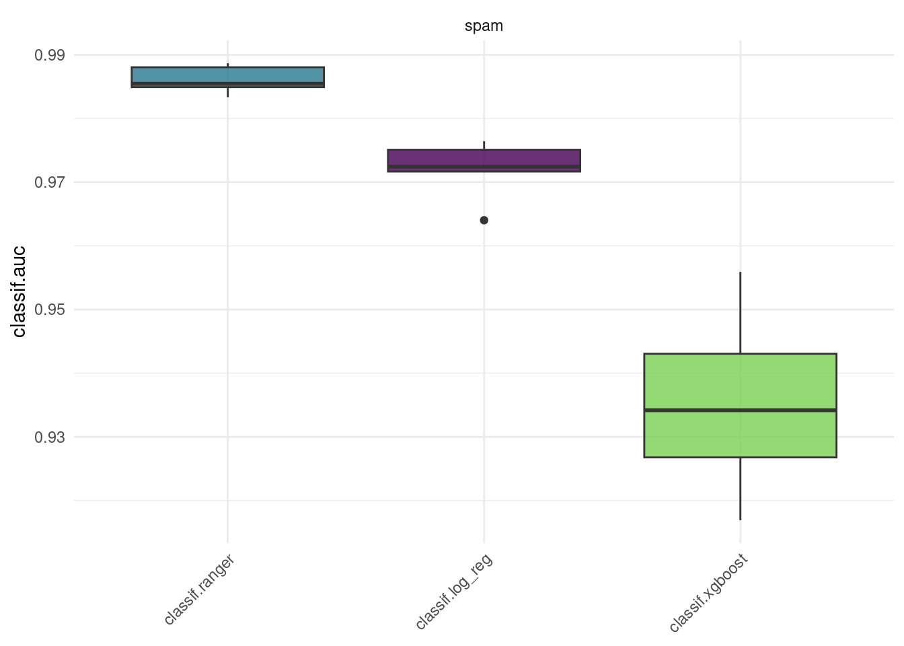
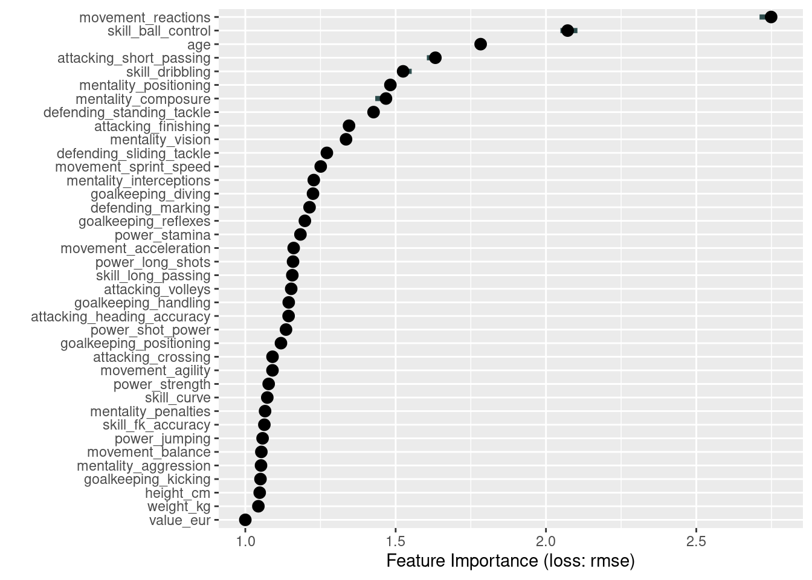
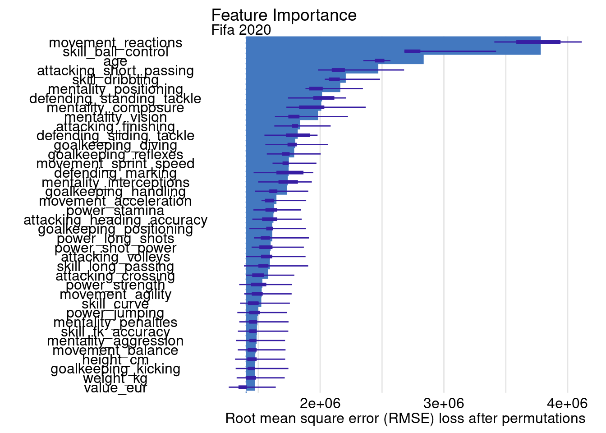
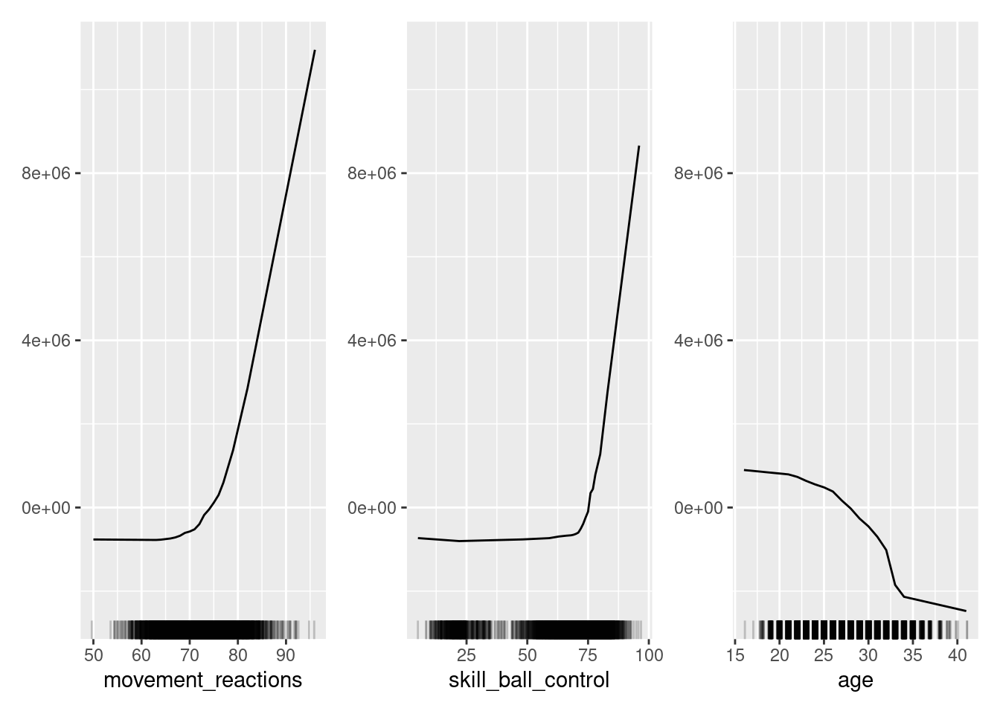
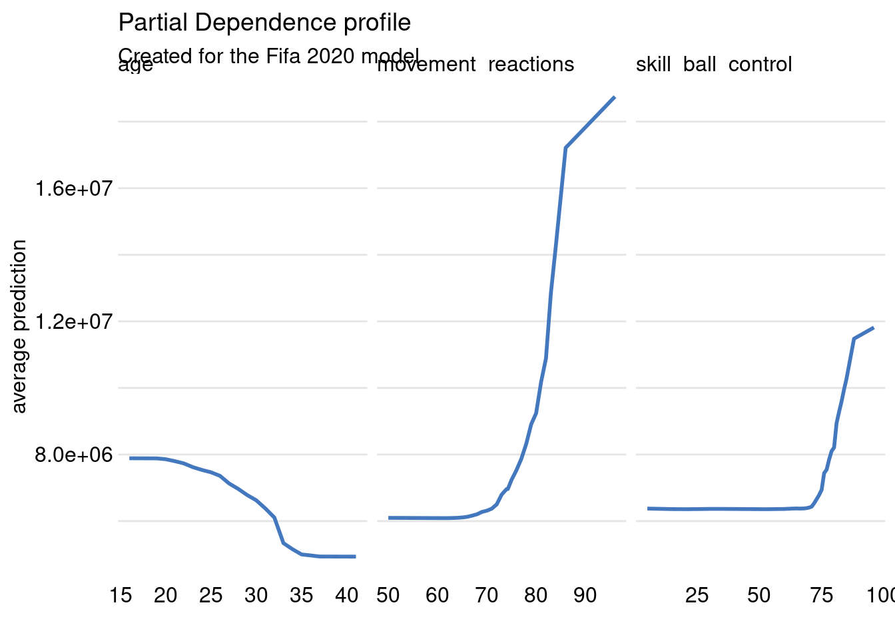
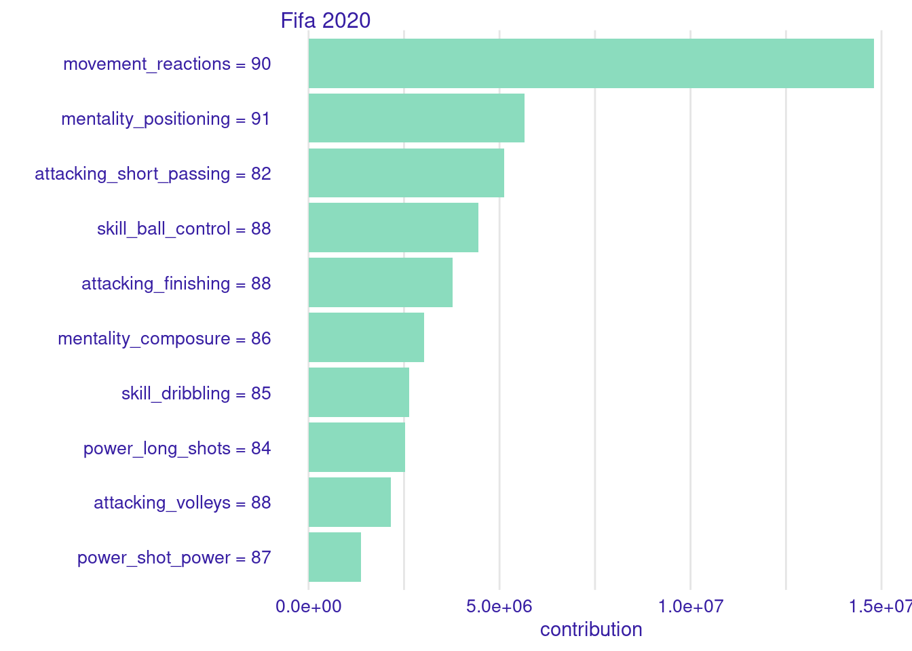

Appendix A — Solutions to exercises
A.1 Solutions to Chapter 2
- Use the built in
sonartask and theclassif.rpartlearner along with the partition function to train a model.
Once the model is trained, generate the predictions on the test set, define the performance measure (classif.ce), and score the predictions.
classif.ce
0.2195122 - Generate a confusion matrix from the built in function.
Since the rows represent predictions (response) and the columns represent the ground truth values, the TP, FP, TN, and FN rates are as follows:
True Positive (TP) = 20
False Positive (FP) = 2
True Negative (TN) = 12
False Positive (FN) = 7
- Since in this case we want the model to predict the negative class more often, we will raise the threshold (note the
predict_typefor the learner must beprobfor this to work).
truth
response M R
M 14 4
R 8 15One reason we might want the false positive rate to be lower than the false negative rate is if we felt it was worse for a positive prediction to be incorrect (meaning the true label was the negative label) than it was for a negative prediction to be incorrect (meaning the true label was the positive label).
A.2 Solutions to Chapter 3
- Use the
spamtask and 5-fold cross-validation to benchmark Random Forest (classif.ranger), Logistic Regression (classif.log_reg), and XGBoost (classif.xgboost) with regards to AUC. Which learner appears to do best? How confident are you in your conclusion? How would you improve upon this?
grid = benchmark_grid(
tasks = tsk("spam"),
learners = lrns(c("classif.ranger", "classif.log_reg", "classif.xgboost"), predict_type = "prob"),
resamplings = rsmp("cv", folds = 5)
)
bmr = benchmark(grid)Warning: glm.fit: fitted probabilities numerically 0 or 1 occurred
Warning: glm.fit: fitted probabilities numerically 0 or 1 occurred
Warning: glm.fit: fitted probabilities numerically 0 or 1 occurred
Warning: glm.fit: fitted probabilities numerically 0 or 1 occurred
Warning: glm.fit: fitted probabilities numerically 0 or 1 occurred
This is only a small example for a benchmark workflow, but without tuning (see Chapter 4), the results are naturally not suitable to make any broader statements about the superiority of either learner for this task.
- A colleague claims to have achieved a 93.1% classification accuracy using the
classif.rpartlearner on thepenguins_simpletask. You want to reproduce their results and ask them about their resampling strategy. They said they used 3-fold cross-validation, and they assigned rows using the task’srow_idmodulo 3 to generate three evenly sized folds. Reproduce their results using the custom CV strategy.
A.3 Solutions to Chapter 4
- Tune the
mtry,sample.fraction,num.treeshyperparameters of a random forest model (regr.ranger) on theMotor Trenddata set (mtcars). Use a simple random search with 50 evaluations and select a suitable batch size. Evaluate with a 3-fold cross-validation and the root mean squared error.
set.seed(4)
learner = lrn("regr.ranger",
mtry.ratio = to_tune(0, 1),
sample.fraction = to_tune(1e-1, 1),
num.trees = to_tune(1, 2000)
)
instance = ti(
task = tsk("mtcars"),
learner = learner,
resampling = rsmp("cv", folds = 3),
measures = msr("regr.rmse"),
terminator = trm("evals", n_evals = 50)
)
tuner = tnr("random_search", batch_size = 10)
tuner$optimize(instance) mtry.ratio sample.fraction num.trees learner_param_vals x_domain regr.rmse
1: 0.3558625 0.9108463 192 <list[4]> <list[3]> 2.757883- Evaluate the performance of the model created in Question 1 with nested resampling. Use a holdout validation for the inner resampling and a 3-fold cross-validation for the outer resampling. Print the unbiased performance estimate of the model.
set.seed(4)
learner = lrn("regr.ranger",
mtry.ratio = to_tune(0, 1),
sample.fraction = to_tune(1e-1, 1),
num.trees = to_tune(1, 2000)
)
at = auto_tuner(
method = tnr("random_search", batch_size = 10),
learner = learner,
resampling = rsmp("holdout"),
measures = msr("regr.rmse"),
terminator = trm("evals", n_evals = 50)
)
task = tsk("mtcars")
outer_resampling = rsmp("cv", folds = 3)
rr = resample(task, at, outer_resampling, store_models = TRUE)
rr$aggregate()regr.mse
12.16805 A.4 Solutions to Chapter 5
- Calculate a correlation filter on the
Motor Trenddata set (mtcars).
library("mlr3verse")
filter = flt("correlation")
task = tsk("mtcars")
filter$calculate(task)
as.data.table(filter) feature score
1: wt 0.8676594
2: cyl 0.8521620
3: disp 0.8475514
4: hp 0.7761684
5: drat 0.6811719
6: vs 0.6640389
7: am 0.5998324
8: carb 0.5509251
9: gear 0.4802848
10: qsec 0.4186840- Use the filter from the first exercise to select the five best features in the
mtcarsdata set.
[1] "cyl" "disp" "drat" "hp" "wt" - Apply a backward selection to the
penguinsdata set with a classification tree learner"classif.rpart"and holdout resampling by the measure classification accuracy. Compare the results with those in Section 5.2.1.
library("mlr3fselect")
instance = fselect(
method = "sequential",
strategy = "sbs",
task = tsk("penguins"),
learner = lrn("classif.rpart"),
resampling = rsmp("holdout"),
measure = msr("classif.acc")
)
as.data.table(instance$result)[, .(bill_depth, bill_length, body_mass, classif.acc)] bill_depth bill_length body_mass classif.acc
1: TRUE TRUE TRUE 0.9565217[1] "bill_depth" "bill_length" "body_mass" "island" "sex"
[6] "year" Answer the following questions:
- Do the selected features differ?
Yes, the backward selection selects more features.
- Which feature selection method achieves a higher classification accuracy?
In this example, the backwards example performs slightly better, but this depends heavily on the random seed and could look different in another run.
- Are the accuracy values in b) directly comparable? If not, what has to be changed to make them comparable?
No, they are not comparable because the holdout sampling called with rsmp("holdout") creates a different holdout set for the two runs. A fair comparison would create a single resampling instance and use it for both feature selections (see Chapter 3 for details):
resampling = rsmp("holdout")
resampling$instantiate(tsk("penguins"))
sfs = fselect(
method = "sequential",
strategy = "sfs",
task = tsk("penguins"),
learner = lrn("classif.rpart"),
resampling = resampling,
measure = msr("classif.acc")
)
sbs = fselect(
method = "sequential",
strategy = "sbs",
task = tsk("penguins"),
learner = lrn("classif.rpart"),
resampling = resampling,
measure = msr("classif.acc")
)
as.data.table(sfs$result)[, .(bill_depth, bill_length, body_mass, classif.acc)] bill_depth bill_length body_mass classif.acc
1: FALSE TRUE FALSE 0.973913 bill_depth bill_length body_mass classif.acc
1: TRUE TRUE TRUE 0.973913Alternatively, one could automate the feature selection and perform a benchmark between the two wrapped learners.
- Automate the feature selection as in Section 5.2.6 with the
spamdata set and a logistic regression learner ("classif.log_reg"). Hint: Remember to calllibrary("mlr3learners")for the logistic regression learner.
library("mlr3fselect")
library("mlr3learners")
at = auto_fselector(
method = fs("random_search"),
learner = lrn("classif.log_reg"),
resampling = rsmp("holdout"),
measure = msr("classif.acc"),
terminator = trm("evals", n_evals = 50)
)
grid = benchmark_grid(
task = tsk("spam"),
learner = list(at, lrn("classif.log_reg")),
resampling = rsmp("cv", folds = 3)
)
bmr = benchmark(grid)
aggr = bmr$aggregate(msrs(c("classif.acc", "time_train")))
as.data.table(aggr)[, .(learner_id, classif.acc, time_train)] learner_id classif.acc time_train
1: classif.log_reg.fselector 0.9219717 5.5736667
2: classif.log_reg 0.9243633 0.1223333A.5 Solutions to Chapter 6
A.6 Solutions to Chapter 8
A.7 Solutions to Chapter 9
A.8 Solutions to Chapter 10
- Prepare a
mlr3regression task forfifadata. Select only variables describing the age and skills of footballers. Train any predictive model for this task, e.g.regr.ranger.
library("DALEX")
library("ggplot2")
data("fifa", package = "DALEX")
old_theme = set_theme_dalex("ema")
library("mlr3")
library("mlr3learners")
set.seed(1)
fifa20 <- fifa[,5:42]
task_fifa = as_task_regr(fifa20, target = "value_eur", id = "fifa20")
learner = lrn("regr.ranger")
learner$train(task_fifa)
learner$modelRanger result
Call:
ranger::ranger(dependent.variable.name = task$target_names, data = task$data(), case.weights = task$weights$weight, num.threads = 1L)
Type: Regression
Number of trees: 500
Sample size: 5000
Number of independent variables: 37
Mtry: 6
Target node size: 5
Variable importance mode: none
Splitrule: variance
OOB prediction error (MSE): 1.022805e+13
R squared (OOB): 0.869943 - Use the permutation importance method to calculate variable importance ranking. Which variable is the most important? Is it surprising?
With iml
library(iml)
model = Predictor$new(learner,
data = fifa20,
y = fifa$value_eur)
effect = FeatureImp$new(model,
loss = "rmse")
effect$plot()
With DALEX
library("DALEX")
ranger_exp = DALEX::explain(learner,
data = fifa20,
y = fifa$value_eur,
label = "Fifa 2020",
verbose = FALSE)
ranger_effect = model_parts(ranger_exp, B = 5)
head(ranger_effect) variable mean_dropout_loss label
1 _full_model_ 1402526 Fifa 2020
2 value_eur 1402526 Fifa 2020
3 weight_kg 1471865 Fifa 2020
4 goalkeeping_kicking 1472795 Fifa 2020
5 height_cm 1474859 Fifa 2020
6 movement_balance 1475618 Fifa 2020
- Use the Partial Dependence profile to draw the global behavior of the model for this variable. Is it aligned with your expectations?
With iml
num_features = c("movement_reactions", "skill_ball_control", "age")
effect = FeatureEffects$new(model)
plot(effect, features = num_features)
With DALEX
num_features = c("movement_reactions", "skill_ball_control", "age")
ranger_profiles = model_profile(ranger_exp, variables = num_features)
plot(ranger_profiles) 
4 Choose one of the football players. You can choose some well-known striker (e.g. Robert Lewandowski) or a well-known goalkeeper (e.g. Manuel Neuer). The following tasks are worth repeating for several different choices.
- For the selected footballer, calculate and plot the Shapley values. Which variable is locally the most important and has the strongest influence on the valuation of the footballer?
With iml
With DALEX
ranger_shap = predict_parts(ranger_exp,
new_observation = player_1,
type = "shap", B = 1)
plot(ranger_shap, show_boxplots = FALSE) 
- For the selected footballer, calculate the Ceteris Paribus / Individual Conditional Expectation profiles to draw the local behavior of the model for this variable. Is it different from the global behavior?
With DALEX